Passo a passo
- Abrir e pesquisar. No menu Assuntos Regulatórios, abra Processo Regulatório. O quadro Pesquisa tem Código, Descrição, Órgão regulador e Ativo (TODAS, SIM, NÃO), os botões PESQUISAR e LIMPAR e o link verde Incluir. Não há IMPRIMIR nem Excel. A busca ignora maiúsculas, mas não ignora acento ("REGULATORIO" não acha "REGULATÓRIO"; "regulat" em minúsculas acha). Sem resultado, a tela diz "A pesquisa não retornou nenhum resultado."
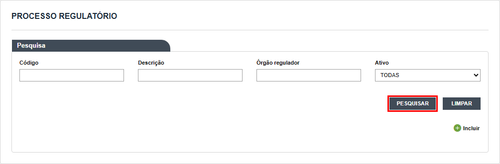
A imagem mostra a tela ao abrir, com o quadro Pesquisa e os botões PESQUISAR, LIMPAR e Incluir.
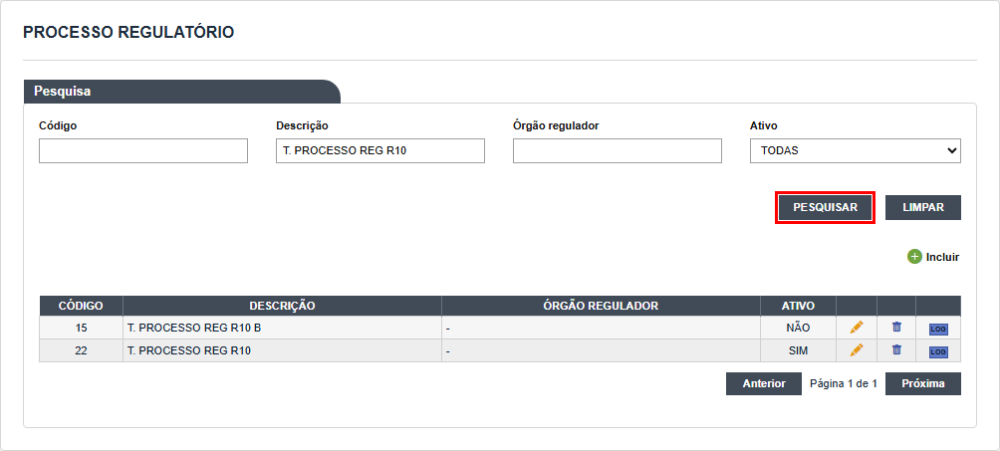
A imagem mostra a lista com CÓDIGO, DESCRIÇÃO, ÓRGÃO REGULADOR, ATIVO e os ícones de editar, excluir e log. A lista traz 10 linhas por página, com Anterior, Próxima e "Página 1 de 2" (sem filtro, "Página 2 de 5"). Imagens de apoio: pesquisa pelo código ( 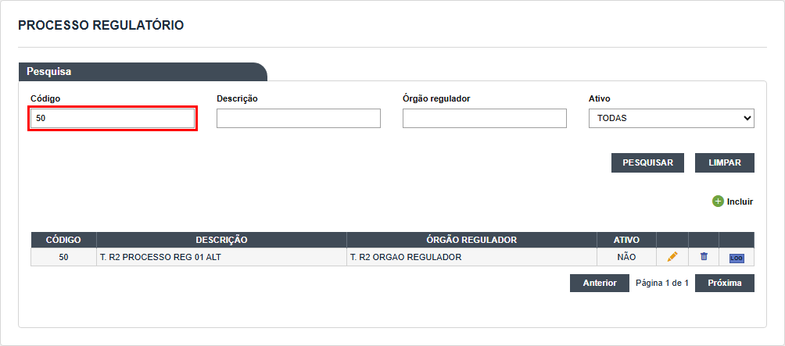 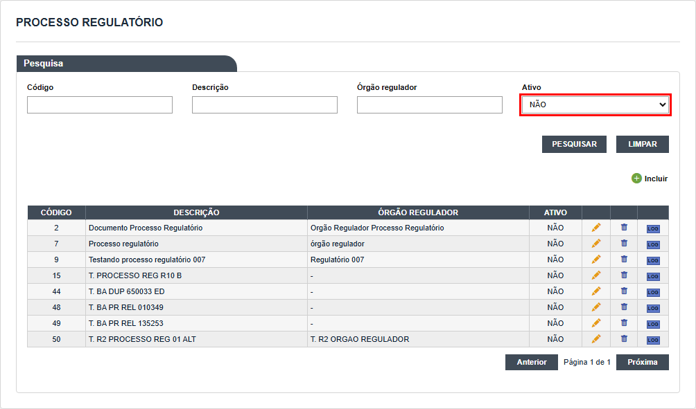 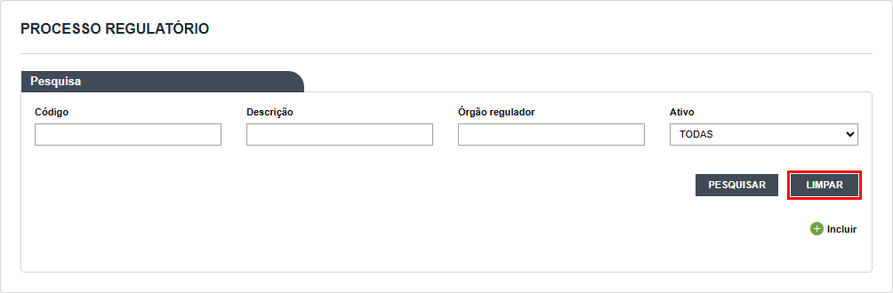
- Incluir. Clique em Incluir. O quadro Edição tem Código (bloqueado), Descrição*, Órgão Regulador, Ativo* (já vem em Sim), Data e Responsável (bloqueados; a Data traz o dia e a hora em que o formulário foi aberto e o Responsável traz o usuário conectado) e Observação. Há VOLTAR no alto e, no pé, VOLTAR, LIMPAR e SALVAR.
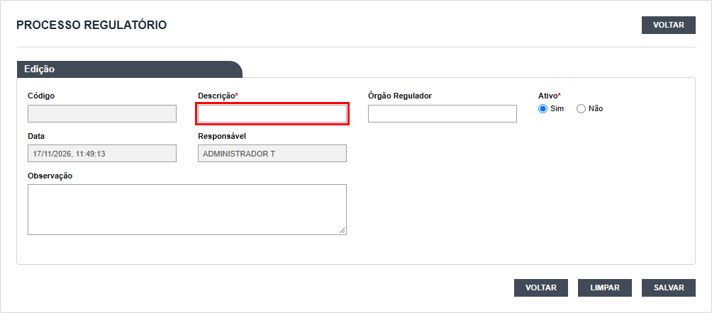
A imagem mostra o formulário vazio, com Data e Responsável preenchidos e bloqueados.
- Salvar vazio. SALVAR sem descrição mostra a faixa "Preencha os campos obrigatórios antes de salvar." e, sob a Descrição, "A descrição é obrigatória."
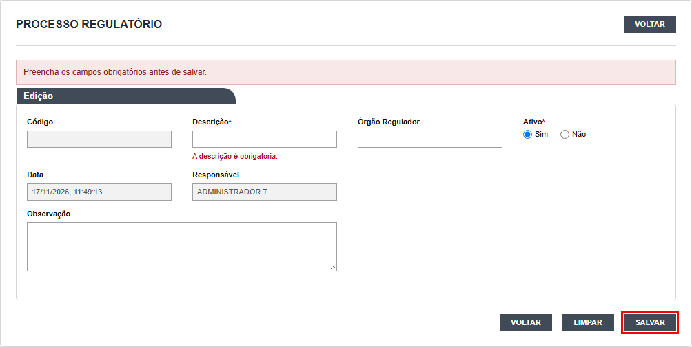
A imagem mostra a faixa de aviso no alto e a mensagem sob o campo Descrição.
- Preencher e salvar. Preencha a Descrição (só ela é obrigatória), o Órgão Regulador e a Observação, se quiser, e clique em SALVAR.
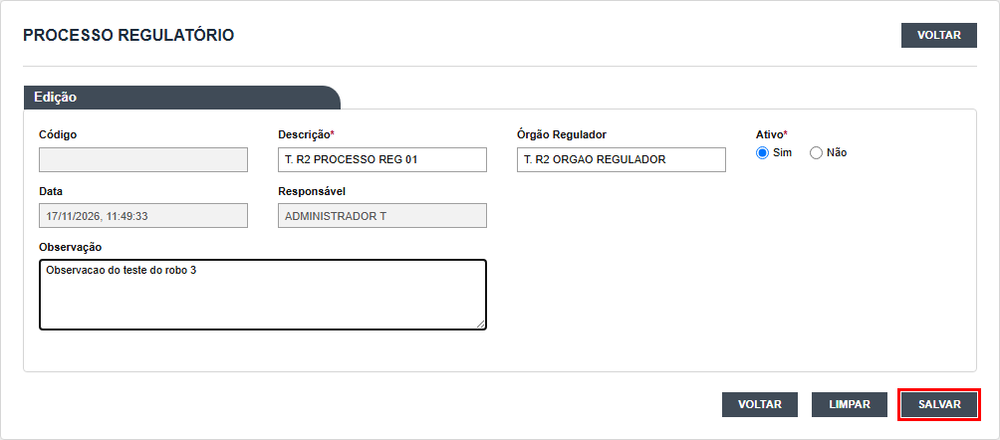
O sistema pergunta "Confirma a inclusão do item?"; com SIM, mostra "Inclusão realizada com sucesso!".
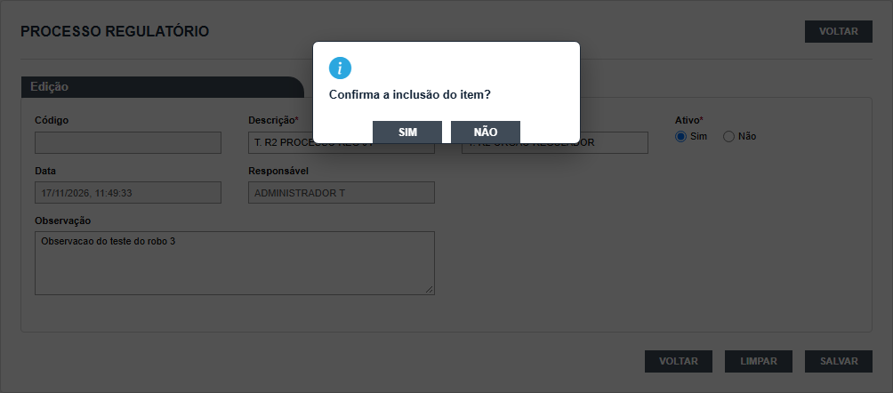
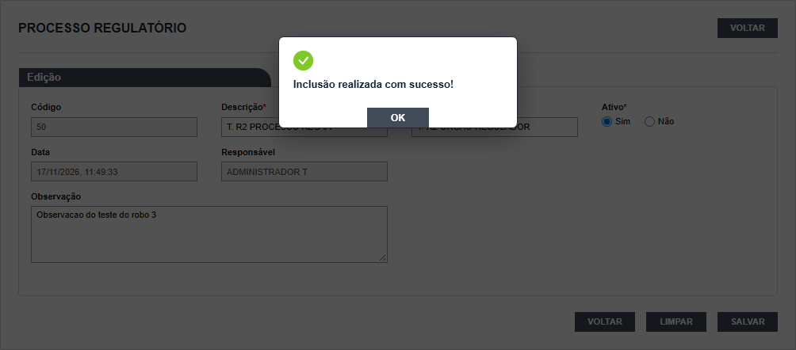
Depois do OK, a tela volta ao quadro Pesquisa com os campos vazios e sem lista: o processo novo não aparece sozinho; é preciso pesquisar de novo (por exemplo, pela descrição) para vê-lo.
A imagem mostra a lista depois de pesquisar de novo por "T. R2", com o processo incluído (código 50).
- Alterar ou inativar. Clique no lápis. A tela de edição abre com os dados do processo.
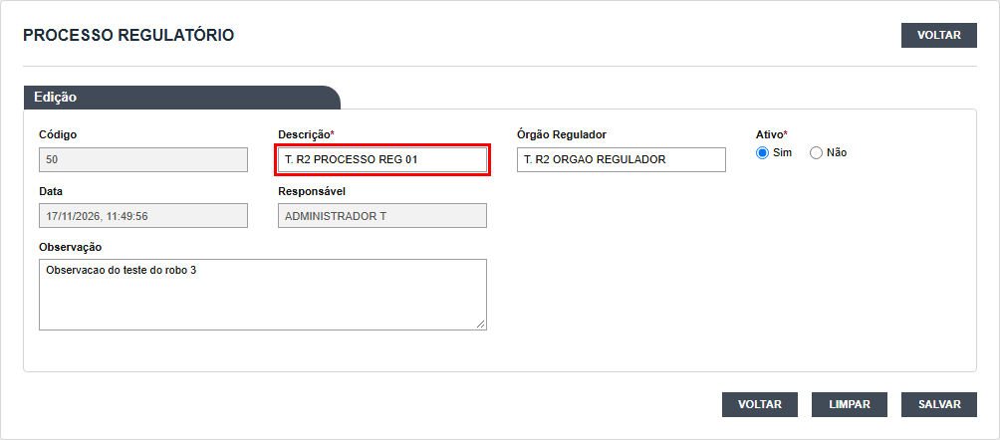
Mude o dado ou marque Ativo = Não ( 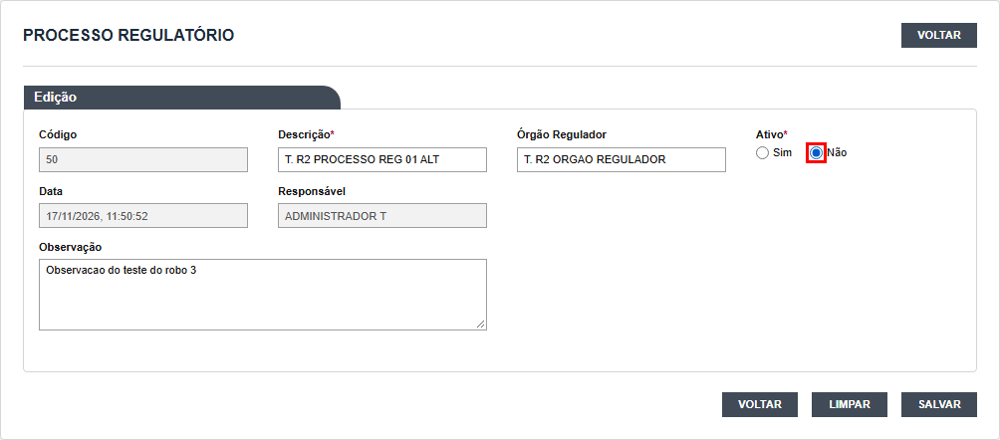
Com SIM, abre a janela Justificativa, que é obrigatória. Sem texto, a janela fica aberta e mostra "A justificativa é obrigatória e deve ter no máximo 255 caracteres."
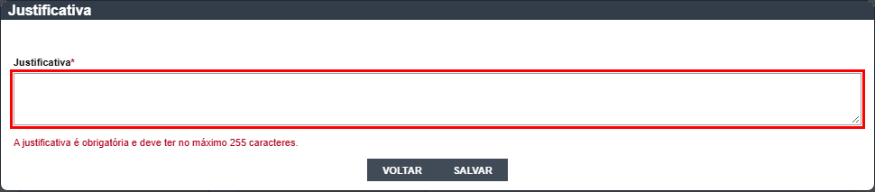

Com o texto, mostra "Alteração realizada com sucesso!".
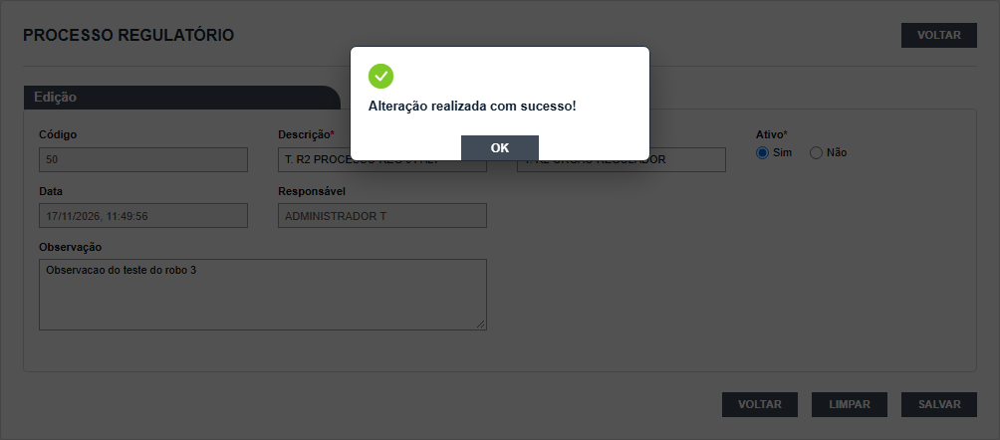
Na lista, o processo inativo aparece com ATIVO = NÃO ( 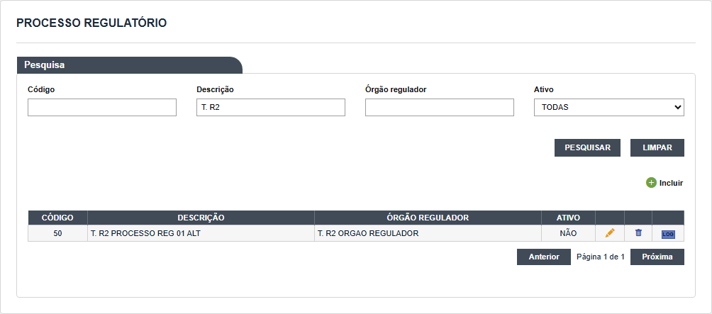
- Ver o histórico. Clique em LOG.
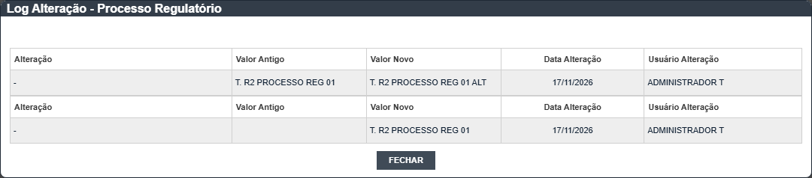
A imagem mostra "Log Alteração - Processo Regulatório" com as colunas Alteração, Valor Antigo, Valor Novo, Data e Usuário; não há coluna de hora nem justificativa. A coluna Alteração traz só "-" (não diz o campo mudado). A inclusão também aparece como uma linha, com Valor Antigo vazio. Na linha da alteração, os valores antigo e novo mostram descrições diferentes; na inativação, os dois valores mostram o mesmo nome (DV-GQ-N-035, DV-GQ-N-018).
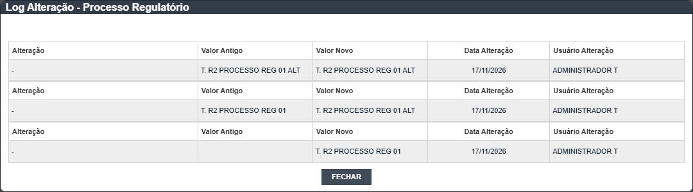
A imagem mostra o histórico depois de inativar: Valor Antigo e Valor Novo iguais.
- Excluir. Clique na lixeira. A página Exclusão mostra os dados travados e os botões VOLTAR e EXCLUIR.
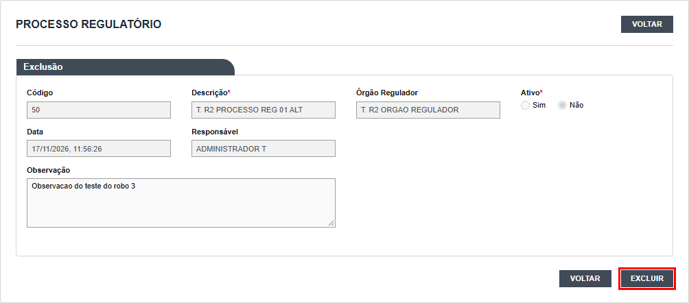
EXCLUIR pergunta "Confirma a exclusão do item?" e pede a Justificativa.
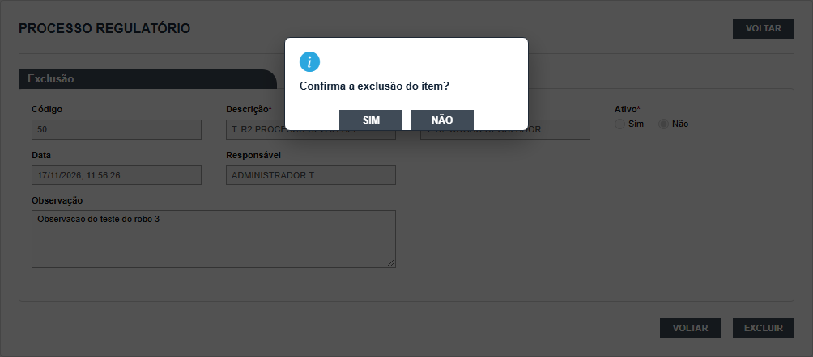
Sem texto na justificativa, a janela mostra "A justificativa é obrigatória e deve ter no máximo 255 caracteres."
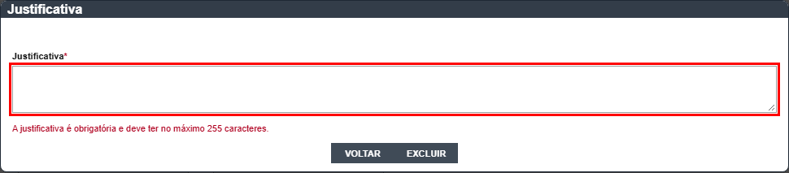
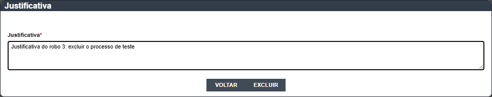
Com o texto, mostra "Exclusão realizada com sucesso!" e o processo sai da lista.
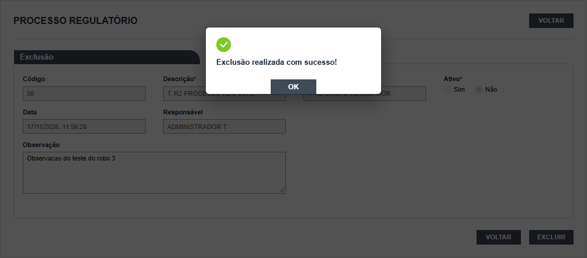
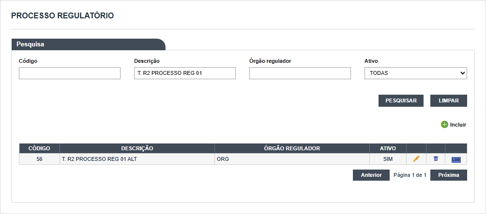
- Excluir um processo que tem programação. A lixeira aparece, mas a tela recusa: "O processo regulatorio possui programacoes vinculadas." (sem acentos), e o processo continua na lista.
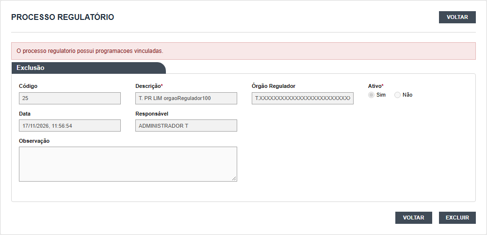
A imagem mostra a página "Exclusão" do processo de código 25, com a faixa vermelha "O processo regulatorio possui programacoes vinculadas." sobre o formulário bloqueado.
- Inativar um processo que tem programação. Ao contrário da exclusão, a inativação é aceita: aparece "Alteração realizada com sucesso!" e nenhum aviso sobre a programação ligada (Ponto para validar com a área: se deveria ser recusada ou avisada).
-
Textos longos. A tela deixa digitar até 255 caracteres na Descrição e no Órgão Regulador, mas o servidor aceita até 250. Com 251 a 255 caracteres, ao salvar, a tela mostra a faixa vermelha "Ocorreu um erro interno no servidor." e nada grava (DV-GQ-N-022).
Descrição de 246 caracteres gravada · clique para ampliar 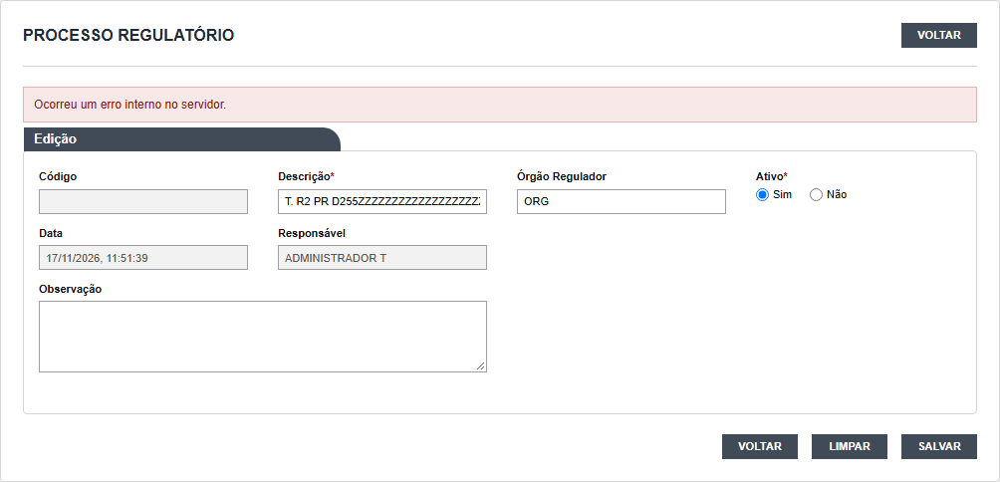
Descrição de 255 caracteres: erro interno · clique para ampliar Órgão Regulador de 201 caracteres gravado · clique para ampliar 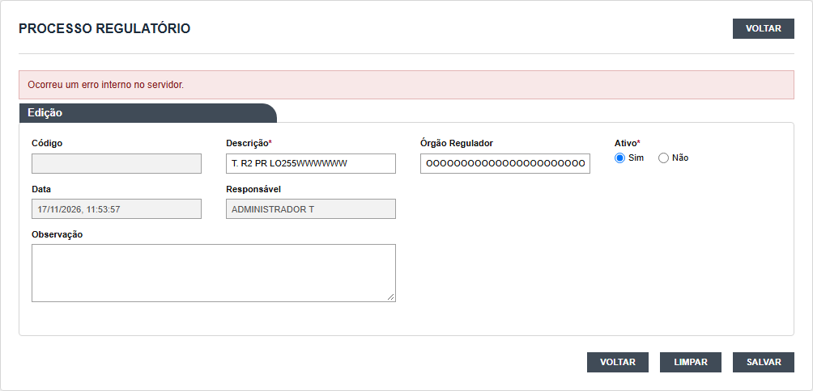
Órgão Regulador de 255 caracteres: erro interno · clique para ampliar As imagens mostram: a Descrição de 246 caracteres gravada ("Inclusão realizada com sucesso!", código 52); a Descrição de 255 com o erro interno; o Órgão Regulador de 201 gravado; e o Órgão Regulador de 255 com o mesmo erro. Os limites exatos foram verificados em 17/11/2026: Descrição 250 grava e 251, 252, 253, 254 e 255 dão erro; Órgão Regulador 201 e 250 gravam e 251, 252 e 255 dão erro. A Observação aceita 4000 caracteres; com 4001, só aparece a faixa "Preencha os campos obrigatórios antes de salvar.", sem aviso sob o campo.
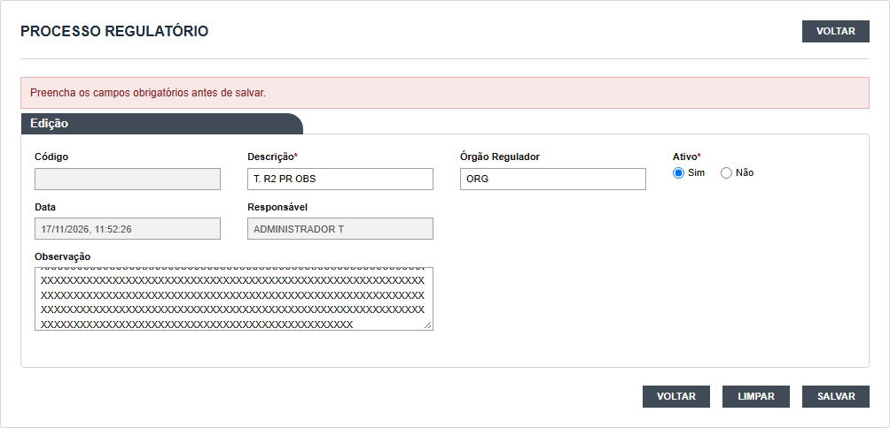
Observação com 4001 caracteres · clique para ampliar -
Descrição repetida. O sistema não recusa um processo com a mesma descrição de outro: grava os dois (DV-GQ-N-023).
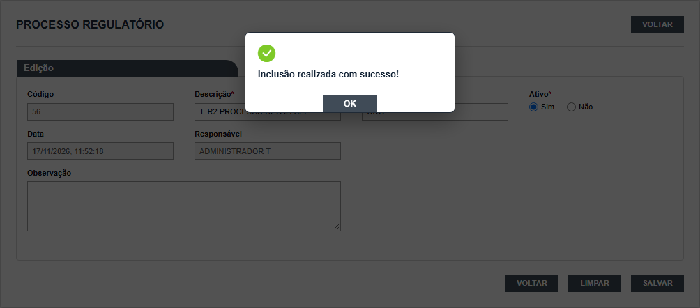
Descrição repetida aceita · clique para ampliar -
Lista com descrições longas. Quando há descrições muito longas, a tabela passa da largura do quadro e a coluna ATIVO e os ícones à direita saem da área visível (DV-GQ-N-050).
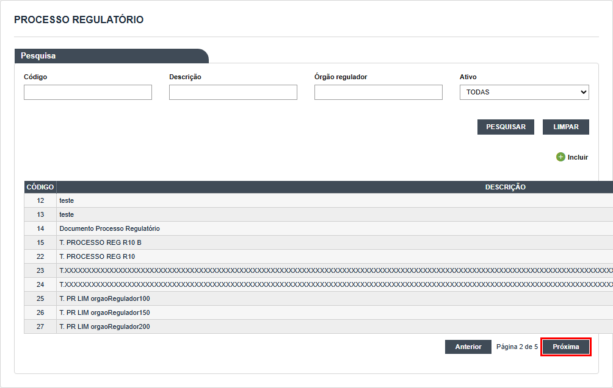
Lista na página 2 de 5, com descrição longa · clique para ampliar